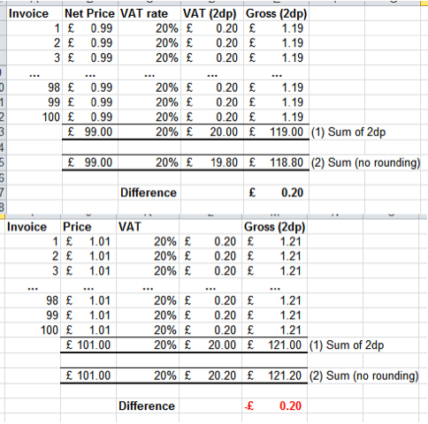

Tax Rounding
Different Tax Amount Due to Rounding
-
The difference in the amount of tax can be explained as a variance of rounding. On each invoice you create, the tax and total are both rounded up or down. The more orders on an invoice or invoices in your list, the more likely there will be a variance in the tax and grand total.
-
The example below explains it well. It basically says...
-
If you sell 1 item at 0.99 cents, with a tax of 20% which is calculated to be 0.198 and is then rounded up to .20.
-
When added to the 0.99 cents, it gives you a total of 1.19.
-
Now, If you have 100 invoices at this amount, the total of all of those individual invoices would be $99 for the product, plus $20 for tax, which gives you a grand total of $119.00.
-
-
However, when you are calculating your taxes, the government only works with totals.
-
So, you sold $99 of goods, times a tax of 20% the tax is calculated to be $19.80.
-
When added to the total goods of $99, it gives you a grand total of $118.80.
-
This diagram shows the difference if the tax is rounded up or rounded down.

The above diagram is from this website: https://ux.stackexchange.com/questions/49135/when-formatting-numeric-data-with-rounding-should-the-total-line-reflect-the-to
-
We trust this helps explain why the numbers can be slightly different from the amount of tax totalled from a list of individual tax amounts on each invoice versus the amount of tax calculated on the total of a group of invoices.
© 2023 Adatasol, Inc.